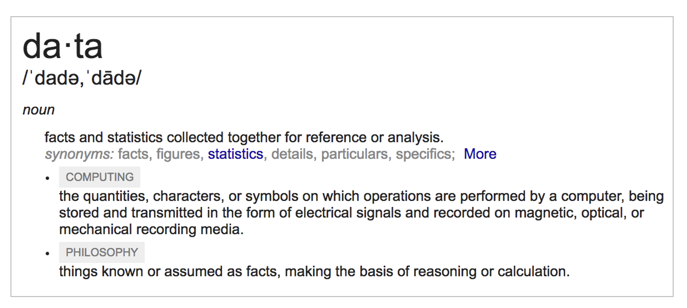
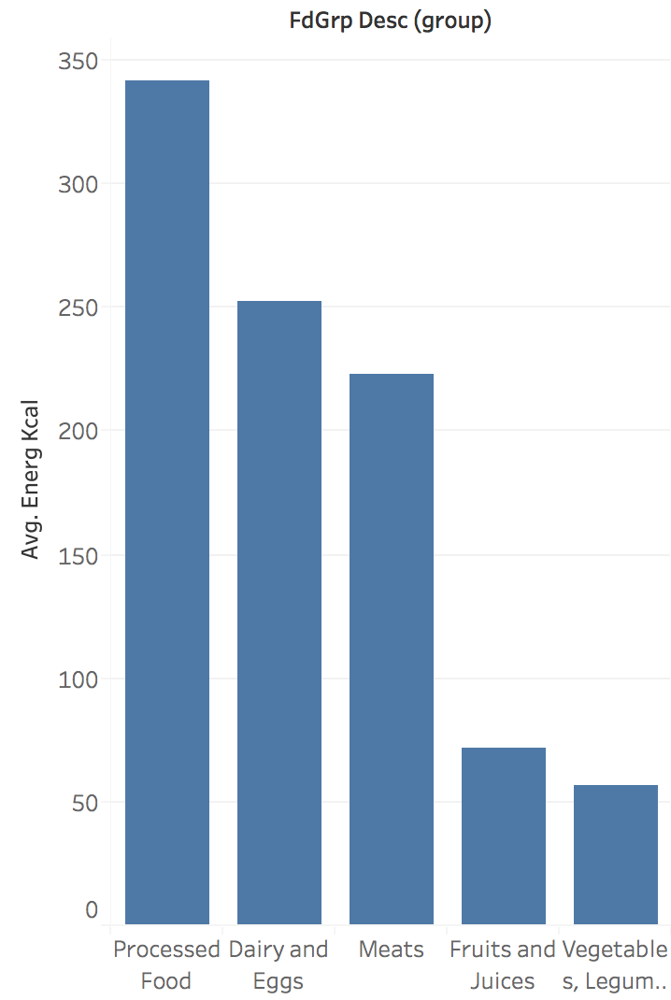
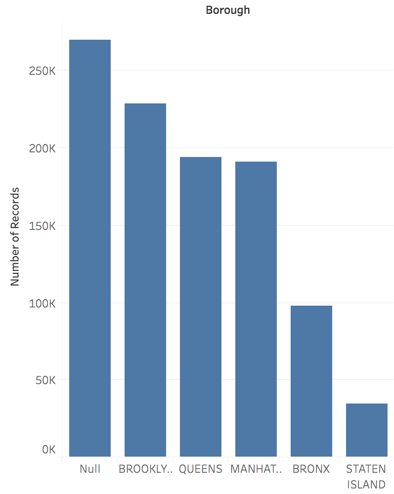
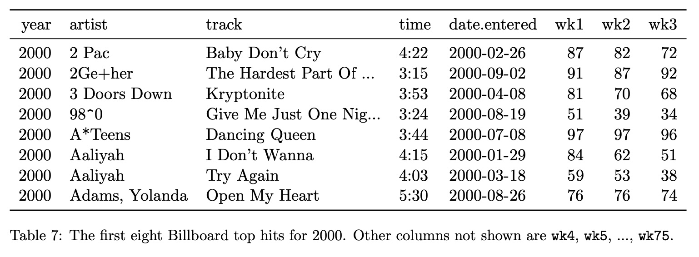

Week 2: Analytical Questions and Data Transformation
CS-GY 6313 Information Visualization
New York University
2025-09-12
Acknowledgments
This lecture incorporates materials from:
- Prof. Jeffrey Heer (University of Washington)
- CSE 512: Data Visualization course materials
- Data transformation and wrangling concepts
- Used consistent with standard academic practice
- Prof. Enrico Bertini (NYU)
- Data abstraction and analytical questions materials
- Used with permission
Today’s Agenda
Three Main Parts
- Part 1: Recap: Data Fundamentals
- Part 2: Analytical Questions
- Part 3: Data Wrangling and Transformations
Detailed Agenda
Recapitulation & Part 2
- What is data? (Interactive discussion)
- Data abstraction: Items + Attributes
- Dataset and attribute types
- Domain vs. data questions
- Task taxonomies for visualization
Part 3
- SQL operations and relational algebra
- Roll-up and drill-down operations
- Tidy data principles
- Real-world data challenges
- Transformation pipelines and tools
Recapitulation: Data Fundamentals
What Is Data?
- Definition: Facts and statistics collected together for reference or analysis
- Examples: Census data, stock prices, sensor readings, survey responses, click streams
- Characteristics: Can be structured/unstructured, quantitative/qualitative, temporal/static
Data in Visualization
The Visualization Pipeline (Card et al., 1999)
- Collection: Raw data from various sources
- Transformation: Data tables, cleaning, structuring, aggregations etc
- Visualization: Visual structures and views
Data Abstraction
Data Abstraction as a Visualization Design Tool
From Reality to Representation
- Real-world phenomena: Events, objects, processes
- Measurements/observations: Sensors, surveys, records
- Abstract data model: Tables, networks, fields
- Visualization encoding: Visual mappings and representations
Datasets = Items + Attributes
Complete the Framework
Items (also called records, cases, objects): - Definition: Objects/entities you want to visualize - Examples:
Attributes (also called variables, features, fields): - Definition: Properties of these objects/entities - Examples:
Dataset Types
Munzner’s Classification (2014)
From “Visualization Analysis and Design”, Chapter 2
Fill in examples for each type:
- Tables:
- Networks:
- Fields:
- Geometry:
Attribute Types
Qualitative (Categorical):
- Nominal: No order (colors, countries)
- Ordinal: Natural order (low/medium/high)
Quantitative (Numeric):
- Discrete: Countable numbers (students in class)
- Continuous: Any value in range (height, temperature)
Stevens’ Levels of Measurement (1946)
Complete the table with examples:
| Level | Description | Operations | Examples |
|---|---|---|---|
| Nominal | Categories, no order | =, ≠ | |
| Ordinal | Ordered categories | =, ≠, <, > | |
| Interval (Quantitative) | Numeric, no true zero | =, ≠, <, >, - | |
| Ratio (Quantitative) | Numeric, true zero | =, ≠, <, >, -, % |
Why is it useful to identify attribute types?
Types provide guidance in selecting appropriate graphical encoding strategies…
Visualization Examples by Attribute Type
Line Charts: Appropriate for Ordered Data

Categorical Data: Arbitrary Sorting
Spatial Attributes: Use Spatial Metaphors
Quantitative Data: Divergent Color Scales
(More) Ways of Characterizing Variables
Physical Types
- Characterized by storage format
- Characterized by machine operations
- Example: bool, int32, float, double, string
Abstract Types
- Provide descriptions of the data
- May be characterized by methods/attributes
- May be organized into a hierarchy
- Example: plants, animals, metazoans
Taxonomy of Data Types
Shneiderman’s Classification (1996)
- 1D (sets and sequences)
- Temporal
- 2D (maps)
- 3D (shapes)
- nD (relational)
- Trees (hierarchies)
- Networks (graphs)
“The eyes have it: A task by data type taxonomy for information visualization”
Dimensions & Measures
Dimensions (~ independent variables)
- Categorical variables that describe and organize data (Nominal, Ordinal)
- Examples: Categories, dates, regions, binned quantities
- Used for: Grouping, filtering, splitting data
Measures (~ dependent variables)
- Quantitative values that can be aggregated (Q)
- Examples: Sales revenue, temperature readings, counts
- Used for: Sum, count, average, std. dev, min/max
Not a strict distinction. The same variable may be treated either way depending on the task. For example - Weather if described as - Hot/Cold(N) vs Temparature Values(Q)
Data Models vs Conceptual Models
Data models are formal descriptions
- Focus on storage, computation, and manipulation
- Example: Array of 32-bit floats [98.6, 101.2, 99.1]
Conceptual models are mental constructions
- Semantic, meaning-rich representations
- Support reasoning, interpretation, and understanding
- Example: Patient temperatures (normal, fever, recovering)
Examples (data vs. conceptual)
- Float array [1.2, -0.8, 2.1] vs. market volatility
- 3D vector of floats vs. spatial location
Data models ask “How is it stored?” Conceptual models ask “What does it mean?”
From Data Model to Stevens’ Levels
Example: Temperature Data
Data Model
- 32.5, 54.0, -17.3, …
- Floating point numbers
Conceptual Model
- Temperature (°C)
Measurement Scales (Stevens’ Levels):
- Above/Below Freezing (Nominal)
- Cold, Warm, Hot (Ordinal)
- Actual Temperature Values (Quantitative - Interval)
Key Point: Same data, different analytical possibilities depending on measurement scale
Part 2: Analytical Questions
Visualization as a Tool to Answer Questions with Data
Domain Questions vs. Data Questions
From Domain to Data Questions
Example: NYC Flight Delays Data

Domain Questions: Flight Data
Visualization Answers All Questions
Example: Vision Zero Initiative
Multiple Data Questions from One Domain Question
Key Insight: Specificity Matters
One domain question can lead to many data questions:
- Temporal granularity: Weekly vs. monthly vs. yearly
- Temporal scope: 5 years vs. 10 years vs. since implementation
- Spatial scope: Citywide vs. by borough vs. by intersection
- Measure definition: Total injuries vs. serious injuries vs. fatalities
Key Characteristics
Assessment Questions Throughout the Pipeline
What Types of Tasks Can We Do with Data?
Shneiderman’s Information Seeking Tasks (1996)
- Overview: What does the data look like?
- Zoom: Focus on items of interest
- Filter: Show me something conditionally
- Details-on-demand: Show me more when I need it
- Relate: How are items connected?
- History: What has changed?
- Extract: Let me save what I find
The Three Levels of Questions
According to Bertin (1983)
- Elementary: What is the value of X for element Y?
- Intermediate: What elements have value X?
- Overall: What are the relationships among all elements?
Modern Task Frameworks
- Brehmer & Munzner (2013): Why - What - How
- Schulz et al. (2013): Goals - Means - Characteristics
Types of Analytical Tasks
Low-level Tasks (Amar et al., 2005)
“Low-Level Components of Analytic Activity in Information Visualization”
Value Tasks
- Retrieve Value: What is the value of attribute X for case Y?
- Filter: Which cases satisfy condition C?
- Compute Derived Value: What is the value of function F given attribute X?
- Find Extremum: What is the max/min value of attribute X?
- Sort: What is the ordering of cases by attribute X?
- Determine Range: What is the span of values of attribute X?
Pattern Tasks
- Find Anomalies: Which cases are exceptional given their relation to others?
- Cluster: Which cases are similar in value for attributes X, Y, Z?
- Correlate: What is the relationship between attributes X and Y?
- Characterize Distribution: What is the distribution of values of attribute X?
Why Task Frameworks?
- Choose appropriate visual encodings - Match data types to suitable visual representations
- Support user tasks - Ensure your visualization enables the analytical tasks users need
- Design systematic interactions - Know what operations users expect to perform
- Avoid visualization pitfalls - Understand when certain chart types mislead or fail
- Evaluate design decisions - Test whether your visualization supports intended analytical goals
- Create complete tools - Build systems that handle the full spectrum of data analysis tasks
Part 3: Data Wrangling and Transformation
The Reality of Data Work
“I spend more than half of my time integrating, cleansing and transforming data without doing any actual analysis. Most of the time I’m lucky if I get to do any ‘analysis’ at all.”
— Anonymous Data Scientist (2012 interview study)
Visualization Reveals Data Problems
“The first sign that a visualization is good is that it shows you a problem in your data. Every successful visualization that I’ve been involved with has had this stage where you realize, ‘Oh my God, this data is not what I thought it would be!’ So already, you’ve discovered something.”
— Martin Wattenberg (ACM Queue ’09)
Data Wrangling Pipeline

Common Data Quality Issues
Missing Data
- Null values
- Empty strings
- Placeholder values (999, -1)
- Incomplete records
Inconsistent Data
- Different formats
- Duplicate records
- Conflicting values
- Unit mismatches
Incorrect Data
- Data entry errors
- Outliers
- Wrong data types
- Invalid relationships
Structural Issues
- Denormalized data
- Wrong granularity
- Mixed semantics
- Schema violations
Common Data Cleaning Techniques
Handling Missing Values
- Purpose: Address incomplete data
- Methods: Imputation, deletion, interpolation
- Example: Fill missing ages with median value
Duplicate Removal
- Purpose: Eliminate redundant records
- Types: Exact matches, fuzzy matching, key-based
Outlier Detection
- Purpose: Identify anomalous values
- Methods: Statistical bounds, domain rules, clustering
Data Type Correction
- Purpose: Ensure proper format consistency
- Methods: Parsing, casting, validation rules
Common Transformation Operations
Aggregation
- Purpose: Summarize groups of data
- Methods: Sum, mean, median, count, min, max
- Example: Daily sales → Monthly totals
Filtering
- Purpose: Focus on relevant subset
- Types: Range, categorical, conditional
Binning
- Purpose: Convert continuous to discrete
- Methods: Equal width, equal frequency, custom _ Example: Dividing age into groups (<18, 18-65, >65)
Normalization
- Purpose: Enable fair comparison
- Methods: Min-max, z-score, percentage
Transformation Pipeline Example
Relational Data Model
Represent data as a table (or relation)
- Each row (or tuple) represents a record
- Each record is a fixed-length tuple
- Each column (or field) represents a variable
- Each field has a name and a data type
- A table’s schema is the set of names and types
- A database is a collection of tables (relations)
Relational Algebra / SQL
Operations on Data Tables: table(s) in, table out
- Project (
SELECT): select a set of columns - Filter (
WHERE): remove unwanted rows - Sort (
ORDER BY): order records - Aggregate (
GROUP BY,SUM,MIN,MAX): partition rows into groups + summarize - Combine (
JOIN,UNION): integrate data from multiple tables
SQL Operations: Project
Input:
| day | stock | price |
|---|---|---|
| 10/3 | AMZN | 957.10 |
| 10/3 | MSFT | 74.26 |
| 10/4 | AMZN | 965.45 |
| 10/4 | MSFT | 74.69 |
→
Output:
| day | stock |
|---|---|
| 10/3 | AMZN |
| 10/3 | MSFT |
| 10/4 | AMZN |
| 10/4 | MSFT |
SQL Operations: Filter
Input:
| day | stock | price |
|---|---|---|
| 10/3 | AMZN | 957.10 |
| 10/3 | MSFT | 74.26 |
| 10/4 | AMZN | 965.45 |
| 10/4 | MSFT | 74.69 |
→
Output:
| day | stock | price |
|---|---|---|
| 10/3 | AMZN | 957.10 |
| 10/4 | AMZN | 965.45 |
SQL Operations: Aggregate
Input:
| day | stock | price |
|---|---|---|
| 10/3 | AMZN | 957.10 |
| 10/3 | MSFT | 74.26 |
| 10/4 | AMZN | 965.45 |
| 10/4 | MSFT | 74.69 |
→
Output:
| stock | min(price) |
|---|---|
| AMZN | 957.10 |
| MSFT | 74.26 |
Roll-Up and Drill-Down
Roll-Up and Drill-Down: Adding Dimensions
Data Cube Visualization: Aggregation Operations
Roll-Up vs. Drill-Down Operations
Creating Derived Attributes
Calculated Fields
# Examples of derived attributes
df['profit_margin'] = df['profit'] / df['revenue']
df['year'] = pd.to_datetime(df['date']).dt.year
df['is_profitable'] = df['profit'] > 0
df['age_group'] = pd.cut(df['age'],
bins=[0, 18, 65, 100],
labels=['child', 'adult', 'senior'])Feature Engineering
- Ratios and percentages
- Time-based features (day of week, season)
- Categorical encoding (one-hot, ordinal)
- Text processing (word counts, sentiment)
Tidy Data: Organizing Data for Visualization
Goal: Structuring data to make visualization and analysis easier

Alternative Data Structures

The Tidy Data Solution

Tidy Data Definition
In tidy data:
- Each variable forms a column
- Each observation forms a row
- Each type of observational unit forms a table
Tidy Data Example #1
Transforming to Tidy Format

Tidy Data Example #2: Before
Tidy Data Example #2: After
Tools for Data Transformation
Programming
- Python: pandas, numpy
- R: dplyr, tidyr
- SQL: CTEs, window functions
Visual Tools
- Tableau Prep
- Power Query
- OpenRefine
- Trifacta
Big Data
- Apache Spark
- dbt
- Alteryx
- Apache Beam
Best Practices
Data Wrangling Guidelines
- Document transformations: Keep track of all changes
- Preserve raw data: Never modify original source
- Validate results: Check for unexpected values
- Test edge cases: Handle nulls, zeros, outliers
- Consider performance: Optimize for large datasets
- Make it reproducible: Script or save workflows
- Think about updates: Design for new data
Examples & Practice
Data to Visualization Examples
Categories → Bar Chart
Spatial Information → Map

Example: U.S. Census Data
Data Schema
- Year: 1850-2000 (every decade)
- Age: 0-90+
- Sex: Male, Female
- Marital Status: Single, Married, Divorced, Widowed
- People Count: Number in group
Questions to Explore
- How has population age distribution changed?
- What are marriage patterns by age and year?
- How do we handle the changing categories over time?
Interactive Exercise: NYC Taxi Data
Dataset Description
Raw taxi trip data with these fields:
- pickup_datetime, dropoff_datetime
- pickup_location, dropoff_location
- trip_distance, fare_amount
- passenger_count
Your Design Tasks
Work in small groups to design a transformation pipeline:
- What derived attributes would be useful?
- How would you aggregate for daily patterns?
- What filtering might reveal insights?
- How would you handle outliers?
Common Data Formats
Text Formats
// JSON: JavaScript Object Notation
[
{"year":1850,"age":0,"marital_status":0,"sex":1,"people":1483789},
{"year":1850,"age":5,"marital_status":0,"sex":1,"people":1411067}
]Binary Formats
- Arrow: Columnar memory format
- Parquet: Compressed columnar storage
- HDF5: Hierarchical data format
Summary
Key Takeaways
Analytical Questions
- Different levels of questions require different visualizations
- Tasks range from elementary lookups to pattern discovery
- Visual queries enable interactive exploration
Data Models & Types
- Distinguish between data models and conceptual models
- Type (N/O/Q) determines appropriate encodings
- Dimensions vs measures depends on analytical task
Data Transformation
- SQL/relational algebra provides fundamental operations
- Tidy data principles enable consistent analysis
- Roll-up and drill-down for multidimensional exploration
Data Wrangling
- Most time spent on data preparation, not analysis
- Visualization helps identify data quality issues
- Document and automate transformation pipelines
Next Week
Week 3: Marks, Channels, and Perception
- Visual encoding principles
- Perceptual effectiveness
- Design guidelines
Reading
- Munzner Ch. 4-5
- Cleveland & McGill (1984)
Lab (Sept 13)
- Hands-on data transformation with pandas
- Creating tidy datasets
- Building transformation pipelines
Questions?
Resources
- Tidy Data Paper
- pandas Documentation
- Data Transformation with dplyr
- Jeff Heer’s CSE 512 Course
- Amar, R., Eagan, J., & Stasko, J. (2005). Low-level components of analytic activity in information visualization. IEEE Symposium on Information Visualization, 111-117.
- Card, S. K., Mackinlay, J. D., & Shneiderman, B. (1999). Readings in Information Visualization: Using Vision to Think. Morgan Kaufmann.
- Munzner, T. (2014). Visualization Analysis and Design. CRC Press.
- Shneiderman, B. (1996). The eyes have it: A task by data type taxonomy for information visualization. Proceedings 1996 IEEE Symposium on Visual Languages, 336-343.
- Stevens, S. S. (1946). On the Theory of Scales of Measurement. Science, 103(2684), 677-680.